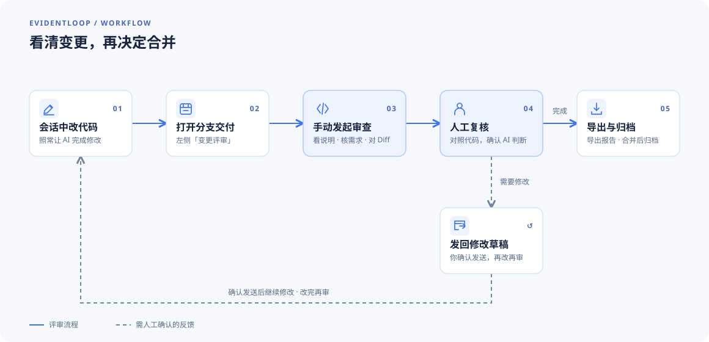
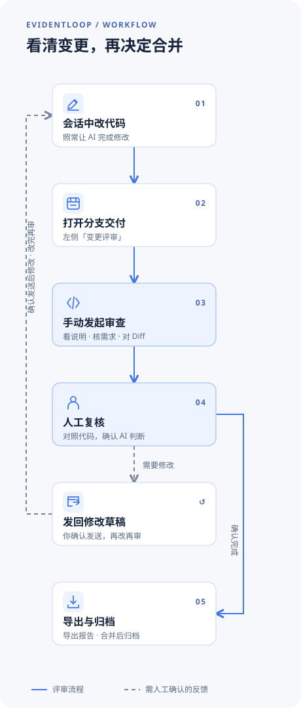

看清 AI 改了什么，
再决定要不要合并
AI 写代码越来越快。EvidentLoop 把每批改动整理成可以验收的交付：按功能看懂改动，逐条核对需求，查出带证据的问题；发回会话修改，改完再审。
DeepSeek Harness 插件 · 0.1.0-rc.1 · Beta

从看懂改动，到发回修改
正式插件实录：加载一份真实历史审查记录快照，查看说明和代码，复核审查意见，导出报告，再写入会话草稿。
公开项目 Sopify 的真实记录；本次采集没有重新调用模型。该快照共 34 个变更文件：已实际审查 1 个，24 个待审，9 个按规则跳过。查看浅深主题截图与完整说明 →
在会话和评审台之间循环
你在会话里改，在评审台里看；修改要求发回会话，改完再审，直到可以放心合并。


你会得到什么
按功能看懂改动
讲清为什么改、怎么改、行为有什么变化，并标明是代码事实还是模型推断。
逐条核对需求
会话里提的需求自动收集、逐条核对；被后来的要求改掉的，标为「已调整」，不算没做到。
查出带证据的问题
每个问题都引用冻结代码的原文，核对不上的不展示；没审完时写明原因，不会说成没问题。
发回修改，留下记录
问题和批注写进会话的输入框，由你确认后发送；每次审查都留档，可以导出。
为什么可以放心用
没提交的改动也能审
AI 改完的代码常常还没提交，不用先提交就能审。
再审只看新改动
没变的文件沿用上次的结论，「新改动」筛选只列出这次改过的文件。
只读，不碰你的仓库
不改代码、暂存区和提交；审查记录只保存在本机。
开源
以 MIT 许可发布。